NP TL-NP-LT-04 — Pre-Planning and Forward Load Assignment to Available Capacity
This process involves pre-planning and assigning loads to available capacity within J.B. Hunt Transport Services' Lowell, Arkansas operation, focusing on intermodal moves using company-owned 53-foot containers.
🗺 BPMN Process Flow
{kind=link}

Click diagram to zoom & pan • Scroll to zoom • Drag to pan • Download SVG
📋 Process Attributes
| Process ID | TL-NP-LT-04 |
|---|---|
| Domain Family | OPERATIONS |
| L1 Domain | Network & Load Planning |
| L2 Process Group | Load Planning & Tender Management |
| L3 Name | Pre-Planning and Forward Load Assignment to Available Capacity |
| Trigger | Receipt of a new load tender or change in existing load schedule |
| Outcome | Successful assignment of the load to an available capacity with optimized routing and scheduling. |
| Systems | McLeod LoadMaster Samsara J.B. Hunt 360 PC*MILER MercuryGate TMS Trimble TMT Fleet Maintenance Lytx DriveCam |
📋 L4 Process Steps
| Step | Name | Role | System | Input | Output | KPI | Pain Point / Risk | Decision? | Exception? |
|---|---|---|---|---|---|---|---|---|---|
| 1.1 | Load Tender Review | Load Planner | McLeod LoadMaster, J.B. Hunt 360 | New load tender details | Load tender analysis report | On-time delivery above 97 percent | Handling unexpected changes in load requirements | Y | N |
| 1.2 | Capacity Availability Check | Dispatcher | McLeod LoadMaster, J.B. Hunt 360 | Load tender analysis report | Available capacity list | Empty mile percentage below 12 percent | Ensuring sufficient capacity for peak demand periods | Y | N |
| 1.3 | Routing Optimization | Load Planner | PC*MILER, J.B. Hunt 360 | Available capacity list | Optimized route plan | Revenue per loaded mile above $1.20/mile | Dealing with unexpected road closures or detours | N | Y |
| 1.4 | Driver Qualification Check | DOT Compliance Specialist | J.B. Hunt 360, MercuryGate TMS | Optimized route plan | Qualified driver list | CSA BASIC percentile below 15th percentile | Ensuring compliance with DOT regulations | Y | N |
| 1.5 | Load Assignment | Dispatcher | McLeod LoadMaster, J.B. Hunt 360 | Qualified driver list | Load assignment notification | Driver turnover below 15 percent per year | Managing driver availability and preferences | N | Y |
| 1.6 | Hours of Service (HOS) Compliance Check | Safety Manager | Samsara, J.B. Hunt 360 | Load assignment notification | Compliance report | HOS compliance rate above 98 percent | Avoiding HOS violations that could lead to CSA interventions | Y | N |
| 1.7 | Equipment Inspection | Diesel Technician | Trimble TMT Fleet Maintenance, J.B. Hunt 360 | Load assignment notification | Inspection report | PM compliance rate above 95 percent | Ensuring all equipment is in good working condition | N | Y |
| 1.8 | Load Documentation Preparation | Settlement Clerk | McLeod LoadMaster, J.B. Hunt 360 | Inspection report | Load documentation | Detention hours per load below 2 hours | Minimizing delays due to incomplete or incorrect documentation | Y | N |
| 1.9 | Load Dispatch Notification | Dispatcher | McLeod LoadMaster, J.B. Hunt 360 | Load documentation | Dispatch notification to driver | On-time delivery above 97 percent | Ensuring timely communication with drivers | N | Y |
| 1.10 | Post-Dispatch Monitoring | Safety Manager | Samsara, J.B. Hunt 360 | Dispatch notification to driver | Real-time monitoring report | Box turns per year above 120,000 | Monitoring for any deviations from the planned route or schedule | Y | N |
| 1.11 | Driver Feedback Collection | Driver Manager | Lytx DriveCam, J.B. Hunt 360 | Real-time monitoring report | Driver feedback form | Driver satisfaction score above 85 percent | Gathering and addressing driver concerns | N | Y |
| 1.12 | Load Completion Verification | Dispatcher | McLeod LoadMaster, J.B. Hunt 360 | Driver feedback form | Load completion confirmation | On-time delivery above 97 percent | Ensuring all loads are completed as per the schedule | N | Y |
📊 KPIs & Risk Register
KPIs
On-time delivery above 97 percent Empty mile percentage below 12 percent Revenue per loaded mile above $1.20/mile CSA BASIC percentile below 15th percentile Driver turnover below 15 percent per year HOS compliance rate above 98 percent PM compliance rate above 95 percent Detention hours per load below 2 hours Box turns per year above 120,000 Driver satisfaction score above 85 percent
Key Risks
HOS violation exposing the carrier to a CSA intervention Inadequate driver qualification leading to safety incidents Equipment failure due to lack of maintenance Late dispatch notifications causing delays in load completion Driver dissatisfaction affecting retention and productivity
Swim Lanes
Load Planner · 1.1, 1.3, 1.8 Dispatcher · 1.2, 1.5, 1.9, 1.12 DOT Compliance Specialist · 1.4 Safety Manager · 1.6, 1.10 Diesel Technician · 1.7 Settlement Clerk · 1.8